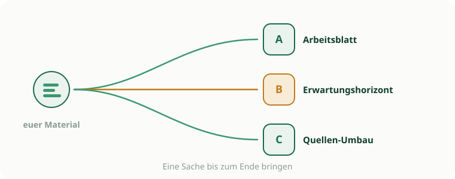
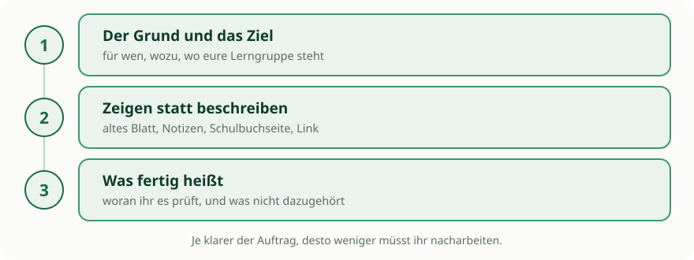

Material bauen, das die KI für euch macht
Ausprobieren, entdecken, und mit einem Ergebnis rausgehen, das ihr wirklich nutzen könnt.
Jetzt dreht sich der Spieß um. Am Vormittag hat die Klasse mit KI gearbeitet, jetzt arbeitet die KI für euch. Ihr nutzt eure privaten Google-Konten mit Gemini und NotebookLM. Weil keine Schülerdaten im Spiel sind, fallen die Beschränkungen vom Vormittag weg. Fotos, Bilder, alles erlaubt.

Drei Schritte zu einem guten Prompt
Ein Prompt ist die Anweisung, die ihr der KI gebt. Die drei Schritte gelten für Gemini genauso wie für NotebookLM, egal welchen Weg ihr unten wählt.

- 1
Der Grund und das Ziel
Sagt, für wen das Material ist, wozu es dient und wo eure Lerngruppe gerade steht. Ein Satz reicht. Fehlt er, schreibt die KI für irgendjemanden.
- 2
Zeigen statt beschreiben
Hängt an, was ihr schon habt: das alte Arbeitsblatt als Foto, eure Notizen, die Schulbuchseite als PDF, einen Link. Ein Beispiel ist mehr wert als drei Absätze Erklärung. Auf dem Privat-Konto dürft ihr das alles hochladen.
- 3
Was fertig heißt
Sagt, woran ihr merkt, dass es passt: eine Seite, sechs Aufgaben, Lösungen am Ende. Und sagt dazu, was nicht hineingehört, sonst schreibt die KI drumherum.
So sehen die drei Schritte in einem Prompt aus:
Ich brauche ein Arbeitsblatt für eine 8. Klasse Physik, dritte Stunde zum Hebelgesetz, als Übung vor der Klassenarbeit. Das angehängte Blatt vom letzten Jahr zeigt, wie ich so etwas aufbaue. Fertig ist es, wenn es auf eine Seite passt, sechs Aufgaben mit steigender Schwierigkeit enthält und die Lösungen am Ende stehen. Versuchsbeschreibungen brauche ich nicht, die machen wir vorher im Unterricht.Sucht euch einen Weg
Alle drei starten mit Material, das ihr schon habt. Nehmt eine Stunde oder Reihe aus eurem Fach.
- A
Ein interaktives Arbeitsblatt
Gemini im Canvas baut aus eurem Text ein Arbeitsblatt, auf Wunsch als kleine interaktive Website mit Klapp-Lösungen oder Quiz. Startet simpel und lasst es aufwerten.
Kannst du diesen Inhalt als interaktive Seite mit ausklappbaren Lösungen und einem kurzen Quiz umsetzen? - B
Ein Erwartungshorizont
Entwickelt eine Musterlösung gemeinsam mit der KI, direkt im Canvas. Diktiert eure Gedanken per Spracheingabe. Normale Texte in Markdown, naturwissenschaftliche Aufgaben in LaTeX, damit Formeln sitzen.
Wir schreiben zusammen einen Erwartungshorizont zu dieser Aufgabe. Ich diktiere die Kriterien, du ordnest sie und formulierst sie aus. Formeln bitte in LaTeX. - C
Material umbauen mit NotebookLM
Ladet eure Quellen in NotebookLM, das nur damit arbeitet und nichts dazuerfindet. Lasst euch daraus eine Struktur, eine Zusammenfassung oder einen Fragenkatalog bauen.
Strukturiere dieses Skript in fünf logische Unterrichtsphasen und erstelle am Ende zehn Verständnisfragen mit Lösungen.
Kurz festhalten
Tragt euer Ergebnis ins Sammel-Template ein: Fach, welcher Weg, welches Werkzeug, und ein Satz dazu, wofür ihr es einsetzen würdet. Zwei Minuten, und die anderen können es nachbauen.
Details zu den Werkzeugen stehen im Werkzeugkasten.